4.1. Background¶
4.1.1. Comparative divergence models¶
Biogeographers are often interested in understanding how large-scale processes affect diversification and community assembly. One way to approach this challenge is to infer the history of diversification across co-distributed species and test for patterns predicted by historical processes of interest (e.g., changes in climate fragmenting communities). For example, if an event split a community of species 260,000 years ago, we might expect the divergences to be temporally clustered across multiple species co-distributed across the barrier created by the event (the ominous “black rectangle” below). More specifically, let’s say we are interested in investigating three species of lizards that are co-distributed across the putative barrier. In order to infer the affect of the historical event on diversification, we want to compare, across the three species, the timing of the divergence between the populations on opposite sides of the putative barrier. If the historical event caused divergence, we would expect that each of the three pairs of lizard populations (or some subset of them) diverged around the same time, as shown in the figure below.
A cartoon showing three pairs of lizard populations that co-diverge due to an event 260,000 years ago.
We can think of this as a particular divergence model where all three pairs of populations share the same divergence-time parameter. If we give the divergence-time parameter the index “1”, we can use the notation 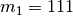 to show that this divergence model assigns population pairs 1, 2, and 3 to divergence-time parameter 1. However, this is only one possible divergence model, and happens to be the most constrained. With three population pairs, there are 4 other possible models of divergence (5 total possible models). Three of these models have two divergence-time parameters. We can assign population-pair 1 to a second divergence-time parameter to get divergence model 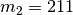, as shown in the figure below.

A cartoon showing population-pair 1 assigned to divergence-time parameter 2, and population-pairs 2 and 3 assigned to divergence-time parameter 1.
We can also assign population-pair 2 to divergence-time parameter 2 to get divergence model 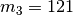, as shown below.
A cartoon showing population-pair 2 assigned to divergence-time parameter 2, and population-pairs 1 and 3 assigned to divergence-time parameter 1.
And for the last possible divergence model with two divergence-time parameters, we assign population-pair 3 to divergence-time parameter 2 to get divergence model 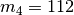, as shown in the figure below.

A cartoon showing population-pair 3 assigned to divergence-time parameter 2, and population-pairs 1 and 2 assigned to divergence-time parameter 1.
Finally, we can add a third divergence-time parameter so that each pair of populations is assigned to its own divergence-time parameter (divergence model 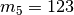), as shown in the last divergence-model figure. This is the most general model of divergence, and has no co-divergence among taxa. Biogeographically, we can think of each free divergence-time parameter as a “divergence event” during which one or more pairs of populations can diverge.

A cartoon showing the most general model of divergence where all three pairs of lizard populations diverge at unique times.
Being energetic herpetologists, we go out and sample individuals from each of the lizard populations, and from those individuals collect DNA sequence data from one or more orthologous loci per pair of populations. We know that the sequences of a locus are related by a genealogy, and that the shape of this genealogy is governed by demographic processes. We also know that the genetic variation we see in the data accumulated as the sequences evolved via mutational processes along the genealogy. We can modify our cartoon of model to better represent this, as I try to do in the figure below.

A cartoon showing the most general model of divergence where all three pairs of lizard populations diverge at unique times.
Before we go any further, let’s clarify some terminology that will be used throughout the PyMsBayes documentation:
Definitions
- Taxon
- A pair of populations that diverged in the past. We are interested in comparing the timing of this divergence to other pairs of populations. I will use taxon interchangeably with species and population pair.
- Divergence event
- Synonymous with divergence-time parameter. It is a parameter of a divergence model that represents a time point in the past at which one or more of the taxa diverged.
- Divergence model
- A particular assignment (set partiton) of taxa to divergence-time parameter(s). It can range from all taxa being assigned to a single divergence-time parameter (i.e., “simultaneous” divergence) to each taxon being assigned to a unique divergence-time parameter (i.e., no co-divergence). Sometimes I get sloppy and just use model.
Next, let’s jump to the “Bayesian divergence-model choice” section to see how we can use the information in the sequence data to infer the temporal distribution of the population divergences across the three lizard species.
4.1.2. Bayesian divergence-model choice¶
In the figures above, we used 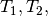 and
 to represent the divergence times of the three
pairs of lizard populations. Now, let’s use
to represent the divergence times of the three
pairs of lizard populations. Now, let’s use  to represent all three divergence times; that is,
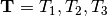.
The number of unique divergence times (i.e., the number of free divergence-time
parameters) within , and the assignment of the lizard
species to these times, depends on the divergence model.
For example, for model 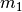 in Figure Divergence Model
111 above, the divergence times would be
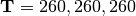 (in thousands of years).
For model 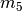 in Figure Divergence Model
123 above, the divergence times would be
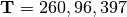.
In order to learn about the affect the “black rectangle” had on the
diversification of these lizard populations, it would be ideal if we could
jointly infer the divergence model and the divergence times from the DNA
sequence data we collected.
to represent all three divergence times; that is,
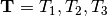.
The number of unique divergence times (i.e., the number of free divergence-time
parameters) within , and the assignment of the lizard
species to these times, depends on the divergence model.
For example, for model 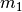 in Figure Divergence Model
111 above, the divergence times would be
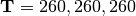 (in thousands of years).
For model 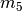 in Figure Divergence Model
123 above, the divergence times would be
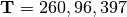.
In order to learn about the affect the “black rectangle” had on the
diversification of these lizard populations, it would be ideal if we could
jointly infer the divergence model and the divergence times from the DNA
sequence data we collected.
In order to do this, we need to assume a probabilistic evolutionary model
that gave rise to the data we collected.
If we assume a Markov-chain model of nucleotide substitution, we can calculate
the probability of the sequence data given the genealogies and a set of
parameter values for the substitution model.
Both dpp-msbayes and msBayes assume an HKY85 model of nucleotide
substitution [4].
If we further assume a coalescent model of ancestral processes, we can
calculate the probability of the genealogies given the sizes of the
populations.
For simplicity, let’s lump all the parameters of the substitution and
coalescent models for all three pairs of lizard populations into
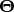.
Let’s also use  to represent all of our sequence
alignments.
Lastly, let’s use
to represent all of our sequence
alignments.
Lastly, let’s use  to represent all of the gene trees
(one for each alignment) that relate the sequences in our alignments.
If we make assumptions about the relative rates of mutations and the relative
generation times among the three lizard species, we can calculate the posterior
probability distribution of the divergence times (and other nuisance
parameters) given the data and one of the models of divergence using Bayes
rule:
to represent all of the gene trees
(one for each alignment) that relate the sequences in our alignments.
If we make assumptions about the relative rates of mutations and the relative
generation times among the three lizard species, we can calculate the posterior
probability distribution of the divergence times (and other nuisance
parameters) given the data and one of the models of divergence using Bayes
rule:
(1)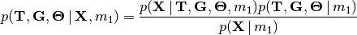
The denominator of Bayes’ rule (Equation (1)) is the marginal probability of the data under divergence model , a.k.a the marginal likelihood of divergence model . This is equal to the integral over the entire parameter space of model of the likelihood density weighted by the prior density:
(2)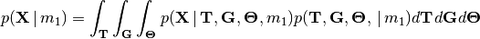
You can think of this as the “average” likelihood of divergence model , and this average is weighted by the prior over the entire space of the model. If we calculate the marginal likelihood of all five possible divergence models, we can use Bayes’ rule again to calculate the posterior probability of divergence model given our sequence data:
(3)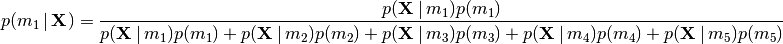
Or, more generally, we can calculate the posterior probability of any
divergence model “ ” using:
” using:
(4)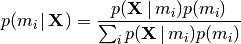
This is essentially the relative marginal likelihood of the model (it is exactly that if assume equal prior mass for each divergence model). We can combine Equations (1) and (4) to better represent that we will be jointly inferring the posterior probabilities of divergence models and the posterior densities of the divergence models’ parameters:
(5)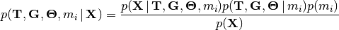
By jointly sampling over the posterior of all the divergence models, Equation (5) will also give us model-averaged estimates of the divergence times for each of our pairs of populations (i.e., we get estimates of divergence times that account for uncertainty in divergence models).
Key point
The key take home here is that the marginal likelihoods are the “guts” of Bayesian model choice, as shown in Equation (4). I.e., it is the marginal probability of our data under a given model that updates our prior expectation and informs the posterior probability of that model. As you might expect, because the marginal likelihoods are weighted by the priors on parameters, the posterior probabilities of the models can be quite sensitive to these priors. NOTE, it is important to realize here that the posterior probability of the models can be very sensitive to the priors on the parameters, not just the priors on the models themselves. Thus, we have to choose the priors on parameters carefully, and should always assess the sensitivity of our results to differences in these prior assumptions.
We will discuss how the choice of prior distribution on divergence times can have a major affect on posterior probabilities of divergence models for both dpp-msbayes and msBayes in the “Prior on divergence times” section. But first, let’s talk about how we will approximate the posterior in Equation (5).
We cannot calculate all of the integrals in Equation (2) exactly, so we will need to use a numerical integration algorithm to approximate the posterior. Furthermore, to avoid deriving and calculating the likelihood function, we will use approximate likelihoods for our numerical integration algorithm. (Digression: this is why I do not like the term “approximate Bayesian computation.” This describes all Bayesian applications except for trivial models where the posterior can be solved exactly. “Approximate-likelihood Bayesian computation” is a much better description.)
4.1.3. Approximate-likelihood Bayesian computation¶
We will use a simple Monte Carlo rejection algorithm based on approximate likelihoods to approximate the posterior in Equation (4). Approximate-likelihood techniques use simulations to avoid calculating the likelihood function. The idea is very simple: given values for all the parameters in the model, we simulate a dataset with the same “dimensions” as the observed data (i.e., the same number of sequence alignments with the same number of rows and columns), and compare the simulated dataset to the observed data. The closer to the observed data, the higher the likelihood for the set of parameter values. If we did this many times, randomly drawing the set of parameter values from the prior distribution each time, and only retained the samples that produced datasets that matched our observed sequence alignments (or sufficient summary statistics of those alignments) exactly, this would be equivalent to an exact-likelihood Bayesian approach. However, the sun would probably burn out while we waited to run enough simulations to collect a decent number of posterior samples in this way. So, to make things more computationally tractable, we will introduce two sources of approximation:
- We will reduce our observed and simulated datasets down to a set of insufficient statistics. This adds a “fudge” factor to the method, because we are throwing away information in our data when we do this.
- We will retain simulations that produce values of these insufficient statistics that are “close enough” to the values calculated from our observed data. This “wiggle room” (tolerance) around the observed summary statistics is another source of approximation.
For illustration purposes, let’s assume we reduce our dataset for the three pairs of lizard populations into one summary statistic per species; perhaps its the average sequence divergence between the two populations. Then, we will simulate lots of datasets under the model (each time based on a set of parameter values drawn from the prior distribution) and reduce each of them to the same three summary statistics. Lastly, we retain the sets of parameter values that produced summary statistics that fall within the “good enough” zone around our observed data. An example of this is animated in the rejection sampling gif below.

An illustration of a Monte Carlo rejection sampler.
This animation begins with a blue dot representing the values of the three summary statistics calculated from the observed sequence alignments. Next, a grey sphere illustrates the “good enough” zone. Then, we see black points accumulate, which represent the values of the three summary statistics calculated from datasets that were simulated under sets of parameter values drawn randomly from the prior. Lastly, we see the retained sample of points that fell within our “good enough” zone; this is our sample from the approximate posterior.
So, how do we decide how large the “good enough” zone is? Well, the smaller the better, but this is governed arbitrarily by computational limitations. What we do is simulate as many datasets as we are willing to wait for and then select the desired number of them that produced summary statistics closest to the observed summary statistics. For example, we might draw 10 million sets of parameter values from the prior, and keep the 10,000 sets that produced summary statistics nearest to the observed statistics; that’s our approximate posterior sample. In this example, the radius of the “good enough” space is determined by the distance between the observed summary statistics and the 10,001st nearest simulated summary statistics. Again, this is arbitrary; drawing 100 million samples and keeping the closest 10,000 would be better. However, we can get a sense of whether we have evaluated a sufficient number of samples from the prior by:
- Keeping track of the parameter estimates as we accumulate samples and watch for them to stabilize.
- Running multiple, independent analyses to make sure the estimates stabilize to similar values each time.
4.1.4. Prior on divergence times¶
As mentioned in section “Bayesian divergence-model choice”, the prior
distribution used for divergence-time parameters can have a very large affect
on the posterior probabilities of the divergence models, due to how the priors
weight the marginal likelihoods of the models
[9] [8].
So, we have to take care when we choose a probability distribution to represent
our prior knowledge about the divergence times of our three pairs of lizard
populations.
This is because this prior has a strong influence on the marginal likelihoods
of the divergence models.
As we add divergence-time parameters to a divergence model, the model is forced
to integrate over a much greater parameter space.
For example, let’s consider a uniform prior of 0 to 5 million years on
divergence times.
The model above only has a single divergence-time
parameter, and so would have to integrate over a single dimension from 0 to 5.
The 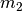, 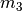, and 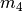 models
each have 2 divergence-time parameters, and so have to integrate over a
 square.
The model has three divergence-time parameters, and so has
to integrate over a 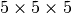 cube.
Now imagine we were comparing 20 pairs of populations; the most general model
would integrate over a 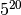 multidimensional space!!
square.
The model has three divergence-time parameters, and so has
to integrate over a 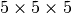 cube.
Now imagine we were comparing 20 pairs of populations; the most general model
would integrate over a 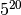 multidimensional space!!
If using a uniform distribution to represent our prior uncertainty, we necessarily have to put a lot of prior density in unlikely regions of parameter space to avoid excluding the true divergence times before we even start the analysis [9]. For example, we might suspect all three pairs of lizard populations diverged within the last 5 million years. However, to feel confident that we are not excluding the (unknown) true values of the divergence times a priori, we might need to specify a prior of 0 to 10 million years. The consequence of this is that we are placing the same amount of prior density between 5–10 million years as we are between 0–5, even though we suspect the former is quite improbable a priori. So, why does this matter? Well, if we were correct a priori, and the likelihood of the three species diverging between 5–10 million years is small, we have imposed a very strong “penalty” for models with more divergence-time parameters. The will integrate over a cube with very small likelihood, but a lot of prior weight, which will result in a very small marginal (or “average”) likelihood, and thus a small posterior probability. Again, imagine the marginal likelihood of the most general model if we were comparing 20 lizard species!! The might have the largest marginal likelihood (even if it does not explain the data very well) simply because it is “averaged” over less space with small likelihood.
A simple example of this is shown in the plot below, which compares a one- vs two-parameter model. From the plot, it seems intuitive that the model with two divergence-time parameters does a much better job of explaining the data. However, because it is averaged over a two-dimensional uniform prior, it actually has a smaller marginal likelihood in this example than the constrained model with only one divergence-time parameter.

The likelihood surface of a divergence model with two divergence-time parameters. The white line shows the likelihood of the co-divergence (1-parameter) model, and the red dashed line shows the outline of a uniform prior. Despite capturing much less of the likelihood density, the constrained 1-parameter model has a larger marginal likelihood in this example.
If we use a uniform prior, we will likely end up with strong posterior support for a model with shared divergence times, even if the three pairs of lizard populations diverged at quite different times. msBayes uses a uniform prior on divergence times, and this is a key reason it will often support models of highly clustered divergences even when taxa diverge randomly over quite broad timescales; see [10] and [9] for more details.
A simple solution to this problem is to use a more flexible prior on divergence times that allows us to better represent our prior uncertainty. In this example, we would like to specify a prior that places most of the prior density on divergence times between 0–5 million years, but allows for a tail with low density to capture our prior uncertainty up to 10 million years. If we look at just one divergence-time dimension (Figure gamma_prior), we can see in the figure below that a gamma probability distribution works quite well for this; dpp-msbayes uses a gamma prior on divergence times.

The flexibility of a gamma distribution (blue) to better represent prior knowledge about divergence times. The black line represents the likelihood density, and the red line is a uniform prior.
From a lot of analyses of simulated and empirical data, I have found that by placing much less prior weight in unlikely regions of parameters space, gamma priors on divergence times are much less likely to spuriously support models of shared divergences across taxa [8].
4.1.5. Prior on divergence models¶
In addition to placing priors on all of the parameters of the divergence
models, we also have to place a prior on the divergence models themselves.
This can be a bit tricky, because there can be a lot of divergence models.
In our example of 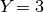 lizard species above, we saw there were
five possible models of divergence (i.e., there were five possible ways to
assign the three species to divergence-time parameters):
There was only one way to assign the species to both one and three divergence
events,
and there were three ways to assign the three species to two divergence events.
More generally, the number of ways to assign  taxa to
taxa to
 divergence events is the
Stirling number of the second kind.
Taking this a step further, there can be anywhere from
divergence events is the
Stirling number of the second kind.
Taking this a step further, there can be anywhere from  to
divergence events, and so to calculate
the total number of possible divergence models, we need to calculate
the
Stirling number of the second kind
for 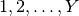 divergence events and sum them all up
(this is the Bell number
[2]).
For 3, 5, 10, and 20 taxa, there are 5, 52, 115975, and 51724158235372
possible divergence models, respectively.
The number of possible models quickly explodes as we compare more taxa!
So, how do we put a prior on all of them?!
to
divergence events, and so to calculate
the total number of possible divergence models, we need to calculate
the
Stirling number of the second kind
for 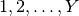 divergence events and sum them all up
(this is the Bell number
[2]).
For 3, 5, 10, and 20 taxa, there are 5, 52, 115975, and 51724158235372
possible divergence models, respectively.
The number of possible models quickly explodes as we compare more taxa!
So, how do we put a prior on all of them?!
msBayes approaches this problem by assigning equal prior probability to all possible numbers of divergence events (divergence-time parameters). However, it is important to realize that this strategy can create a very non-uniform prior on the divergence models. This is because there are many more ways to assign our taxa to intermediate numbers of divergence events. For example, if we are comparing 10 taxa, the histogram below shows the number of possible assignments of those taxa to 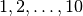 divergence events (i.e., the number of possible divergence models with divergence-time parameters).
The number of divergence models for 10 taxa.
As we can see, for 10 taxa, there are over 40,000 different models of divergence with five divergence-time parameters, whereas there is only one model with one or 10 divergence-time parameters. Thus, if we place a uniform prior on the number of divergence-time parameters, as is done in msBayes, the prior probability of each divergence model with divergence-time parameters is very non-uniform, as shown in the figure below.

The average prior probability of a divergence model with 1 to 10 divergence events.
Almost all of the prior probability mass is placed on the divergence models with one and ten divergence-time parameters. If we consider that the marginal likelihood of the model with 10 divergence-time parameters will be very small under a uniform prior on divergence times (see the “Prior on divergence times” section), msBayes effectively is placing most of the prior probability on the model of divergence with a single divergence event (a single divergence-time parameter shared across all taxa). Due to this interaction between the uniform priors on divergence times and the number of divergence events, msBayes often incorrectly supports models with very few divergence events shared across taxa [8][9][10].
4.1.5.1. Dirichlet-process prior on divergence models¶
dpp-msbayes takes a non-parametric approach to this problem, and treats the
number of divergence events, and the assignment of the taxa to the events, as a
Dirichlet process [3].
This assigns prior probabilities directly to the divergence models and avoids
the combinatorial problem created when assigning prior probabilities to the
number of events (Figure probability_of_models).
Also, the “clumpiness” of the Dirichlet process is controlled by a
concentration parameter ( ), which makes it a very flexible prior
to use for divergence models (I.e., we can control how much co-divergence we
expect across taxa a priori).
), which makes it a very flexible prior
to use for divergence models (I.e., we can control how much co-divergence we
expect across taxa a priori).
The basic idea of the Dirichlet process is quite simple; you assign
random variables (divergence times of our population pairs) to categories
(divergence events) one at a time following a very simple rule. When assigning
the  random variable, you assign it to its own category (i.e.,
a new category) with probability
random variable, you assign it to its own category (i.e.,
a new category) with probability
(6)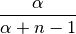
or you assign it to an existing category  with probability
with probability
(7)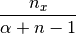
where  is the number of random variables already assigned to
category .
OK, that might not sound very simple, but it is if we just walk through
an example using our three lizard species.
First, we have to assign our first lizard specie (“A”) to a
divergence event with probability 1.0 (the species had to diverge
sometime!); let’s call this the “blue” divergence event.
Next we assign the second species (“B”) to either a new (“red”) divergence
event with probability 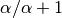 or to the same “blue”
divergence event as the first species with probability 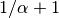.
For this example, let’s say it gets assigned to the “blue” event.
Lastly, we assign the third species (“C”) to either a new (“red”) divergence
event with probability 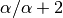 or to the same “blue”
divergence event as the first two species with probability 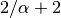.
is the number of random variables already assigned to
category .
OK, that might not sound very simple, but it is if we just walk through
an example using our three lizard species.
First, we have to assign our first lizard specie (“A”) to a
divergence event with probability 1.0 (the species had to diverge
sometime!); let’s call this the “blue” divergence event.
Next we assign the second species (“B”) to either a new (“red”) divergence
event with probability 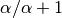 or to the same “blue”
divergence event as the first species with probability 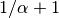.
For this example, let’s say it gets assigned to the “blue” event.
Lastly, we assign the third species (“C”) to either a new (“red”) divergence
event with probability 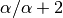 or to the same “blue”
divergence event as the first two species with probability 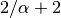.
If we draw out all possible assignments as a tree, we get Figure dpp_tree below. You can adjust the concentration parameter to get a feel for how it affects the prior probability of each divergence model. Notice that as the concentration parameter increases we place more and more probability on the divergence models with less clustering (less shared divergences), whereas we place more and more probability on clustered models (shared divergences) as we decrease the concentration parameter.
4.1.6. Re-sorting the taxa during the ABC algorithm¶
As discussed in [8], before msBayes compares the simulated and observed summary statistics to determine whether or not to retain the set of parameters for the posterior sample, it re-sorts them. Thus, the summary statistics being compared were calculated from alignments of different taxa and/or loci. In order for this to be mathematically valid, all of the alignments must have identical:
- Length
- Numbers of sequences
- HKY85 substitution model parameters
- Mutation-rate multipliers
- Ploidy multipliers
- The same loci sampled for all taxa
If any of these conditions are not met, which is the case for almost all empirical datasets, the re-sorting that is done by msBayes is mathematically incorrect, and can produce biased results.
For example, below are some results based on analyses of 100,000 simulated datasets. All of the simulated datasets had a single locus for six taxa, with varying numbers of individuals per population and varying sequence lengths across taxa. All of the other conditions specified above were met, and the prior was exactly correct (no model misspecification). When analyzing these datasets under the original msBayes model, but maintaining the order of the taxa, the method does well, as shown at the top of Figure model_choice below. When the taxa are re-sorted during the ABC algorithm, the method is strongly biased toward over-estimating the probability of simultaneous divergence (Figure model_choice bottom).

Model choice behavior without (top) and with (bottom) re-sorting of the taxa.
The take-home message here is:
Important
Do not use the sorting options in msBayes or dpp-msbayes!!
PyMsBayes allows you to use the models of msBayes and dpp-msbayes while maintaining the order of the taxa.

{kind=link}
{kind=link}
{kind=link}
{kind=link}